0x01 客户端JS检查
pass01
1 | function checkFile() { |
抓包修改后缀名上传
能够成功说明，服务端未对后缀名在进行过滤
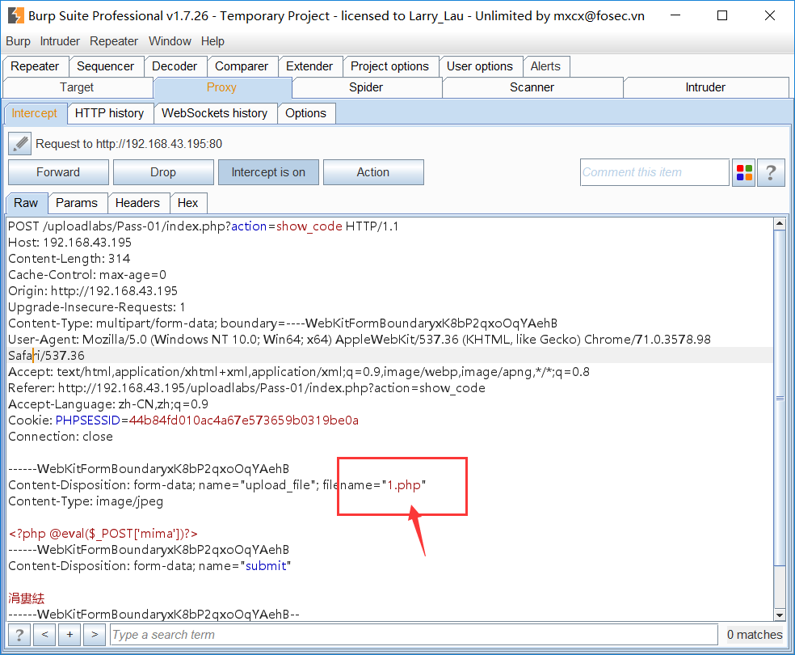修改网页JS源码
注意这里需要把JS代码放置于conslo中，否则JS无法运行。回车就能使得2.php文件上传
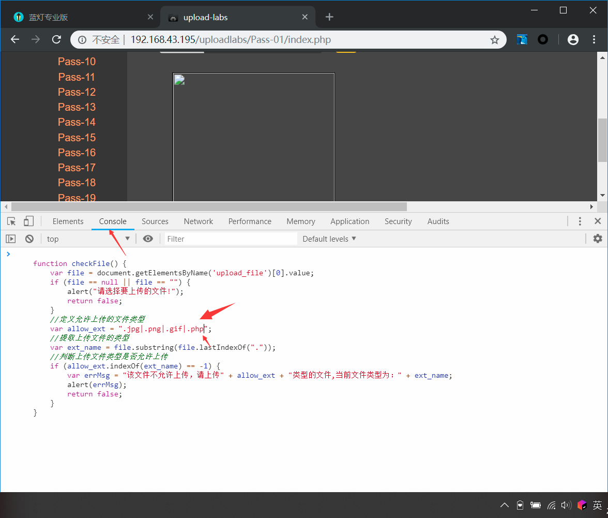
黑名单
黑名单过滤是一种不安全的方式，黑名单定义了一系列不安全的扩展名，服务器端在接收文件后，与黑名单扩展名对比，如果发现*文件扩展名与黑名单里的扩展名匹配，则认为文件是不合法。
- 忽略扩展名
- 大小写转换
- 小数点空格
0x02 MIME类型
Content-Type: 学习
常见的媒体格式类型如下：
text/html ： HTML格式
text/plain ：纯文本格式
text/xml ： XML格式
image/gif ：gif图片格式
image/jpeg ：jpg图片格式
image/png：png图片格式
以application开头的媒体格式类型：
application/xhtml+xml ：XHTML格式
application/xml ： XML数据格式
application/atom+xml ：Atom XML聚合格式
application/json ： JSON数据格式
application/pdf ：pdf格式
application/msword ： Word文档格式
application/octet-stream ： 二进制流数据（如常见的文件下载）
application/x-www-form-urlencoded ：
pass02
1 | $is_upload = false; |
检查MIME类型是在content-Type中回显，当我上传2.php文件时显示 application/octet-stream
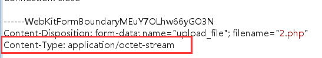
当我上传1.jpg时 ，抓包显示 image/jpeg
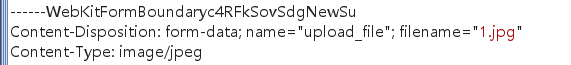
所以我们上传2.php。在抓包中修改content-type中修改值为image/jpeg就可以成功上传
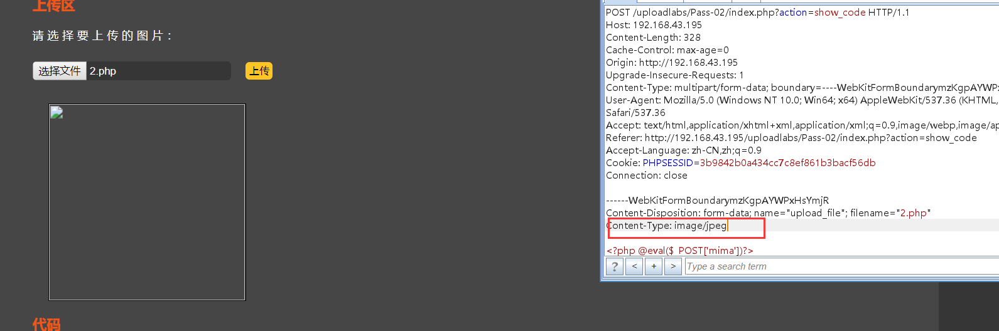
0x03 上传可特殊解析后缀
pass03
可用脚本加载 .php3 / .phtml
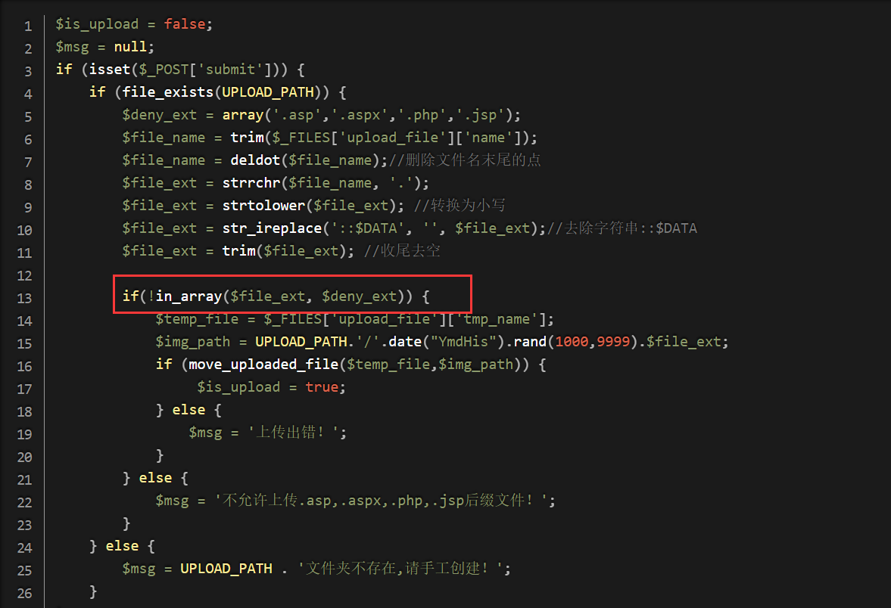
创建phpinfo.php3文件，包含PHP脚本的HTML网页。(这里WINDOWS10无法被正确解析，所以在UBUNTU下。)
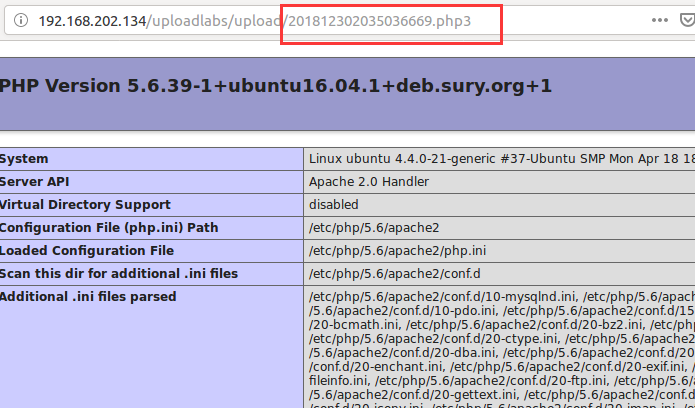
0x04 .htaccess
pass04
笼统地说，.htaccess可以帮我们实现包括：文件夹密码保护、用户自动重定向、自定义错误页面、改变你的文件扩展名、封禁特定IP地址的用户、只允许特定IP地址的用户、禁止目录列表，以及使用其他文件作为index文件等一些功能。
windows下编辑TXT文件内容编辑为 SetHandler applicattion/x-httpd-php>>".htaccess"另存为桌面上传文件>>上传2.gif
0x05 点、空、大小、::$DATA_绕过
pass05
源码并没有对大小写进行转换
burpsuite抓包大小写混写绕过
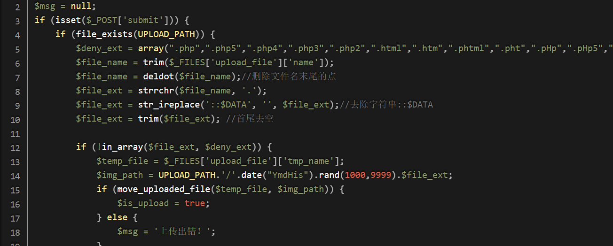
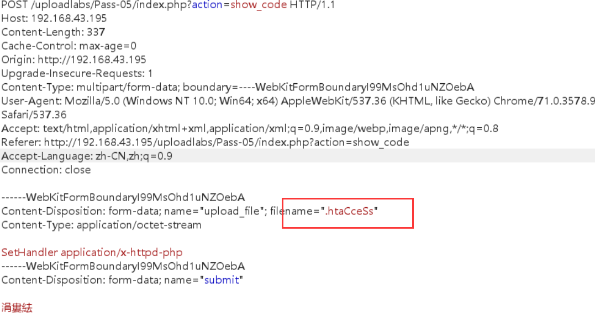
pass06
未去空字符

pass07
windosw对后缀名 空格 点可以自动消去
源码未未对点好进行过滤
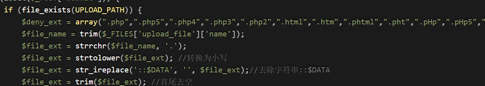
抓包添加引号即可绕过，上传成功
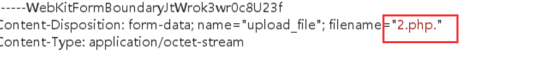
pass08 ::$DATA
::$DATA 绕过
或者 2.php. . 绕过
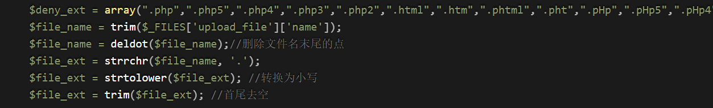
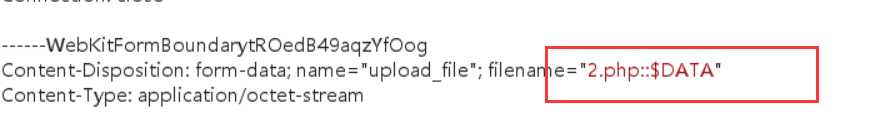
pass09
1 | $file_name = trim($_FILES['upload_file']['name']); |
strrchr() 返回 “ . ”再字符串中出现的最后一个位置。所以我在pass08尝试 点空绕过，最后会没有后缀名。原因就是它截取的是最后一个点后的字符串$file_ext。$file_ext在匹配黑名单，最后一个字符串为空就不存在被限制的作用
最后代码中的文件名拼接采用的初始filename后缀名，依照以上以上思路采用点空绕过，
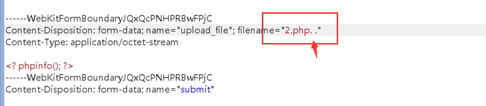
pass10
1 | $is_upload = false; |
黑名单，替换函数，使用双写绕过。
0x06 白名单绕过
白名单的过滤方式与黑名单恰恰相反，黑民动感是定义不允许上传的文件扩展名，而白名单则是定义允许上传的扩展名，白名单拥有比黑名单更好的防御机制
pass11
存储路径可控。url中解析%00为\000，而PHP文件只解析\000前的文件
本关 路径可控 ../upload/2.php%002.gif>>2.php
1 | $is_upload = false; |
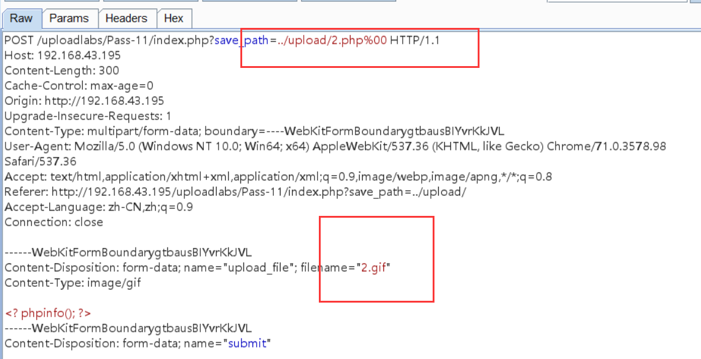
pass12
POST路径可控，但是无法通过直接添加%00解析，需要通过二进制添加。在0d 0a前添加byte 00
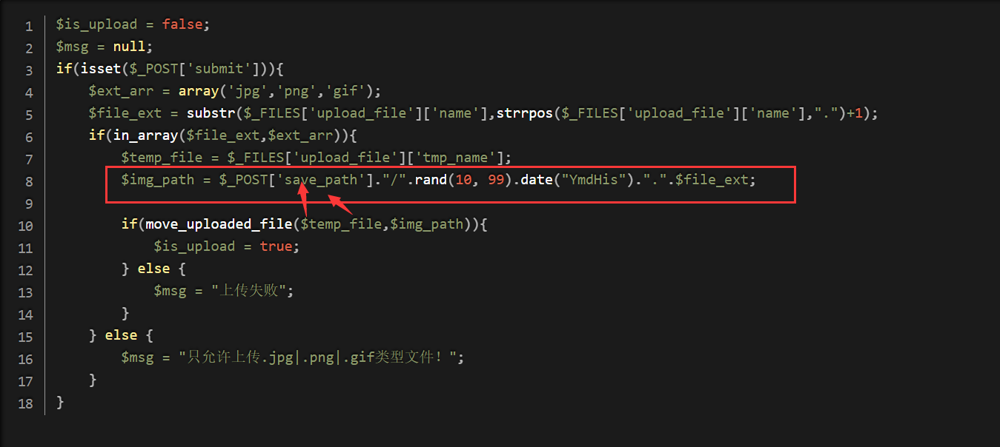
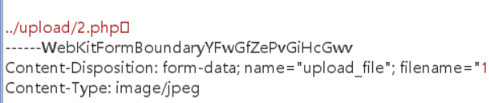
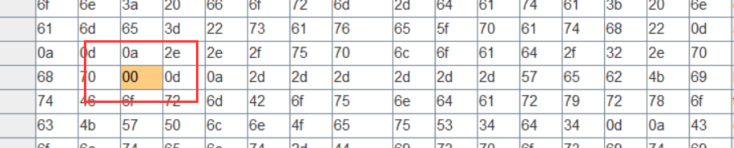
pass13
源码需要检查文件开头的两字节是否为图片标志
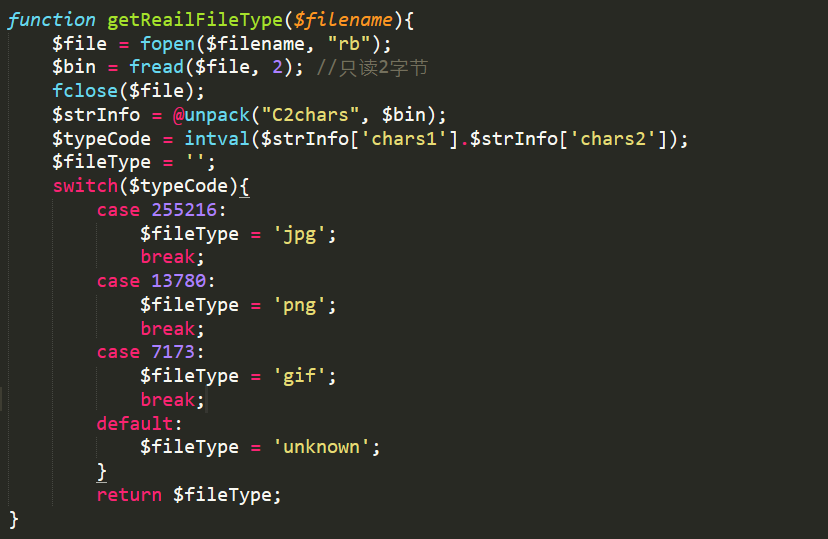
1)使用windows 10 copy normal.gif /b + xx.php /a webshell.gif
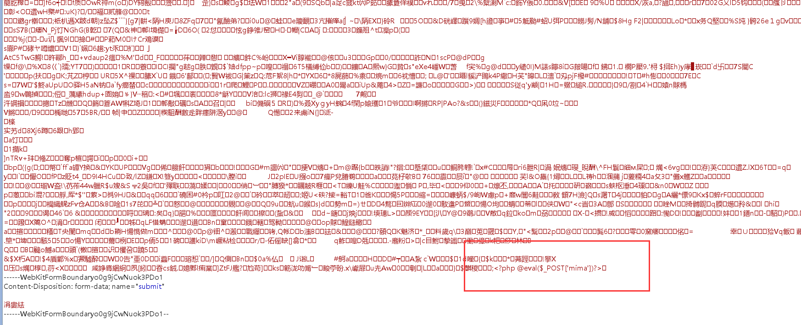
2)源码是抽取前两个字节，可以直接在PHP前直接添加字符GIF，也是能成功绕过
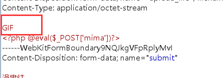NOTIC：接下来就是需要使用文件包含漏洞http协议打开，才能使得用PHP方式解析。而且这里文件路径不可控无法使用%00截断。
0x07 函数限制绕过
pass14
getimagesize()获取图像相关信息
索引0包含图像宽度的像素值，1 包含图像高度的像素值，2 是图像类型的标记image_type_to_extension()获取文件后缀名stripos(a,b)字符b在a中出现的首次位置
代码提取文件名后缀，判断后缀名是否在$type='.jpeg|.png|.gif'中
与PAss13 相似使用图像木马绕过
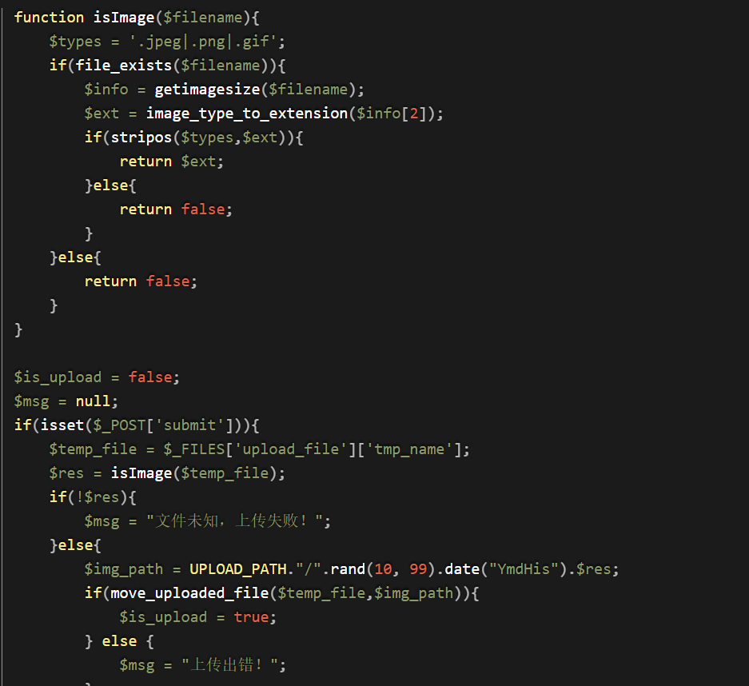
pass15
exif_imagetype() 读取一个图像的第一个字节并检查其签名 和$_SERVER['HTTP ACCEPT'] 结合使用来检查浏览器是否可以显示某个指定的图像。
与getmagesize()它还检查签名
与PASS14相同上传图片木马即可
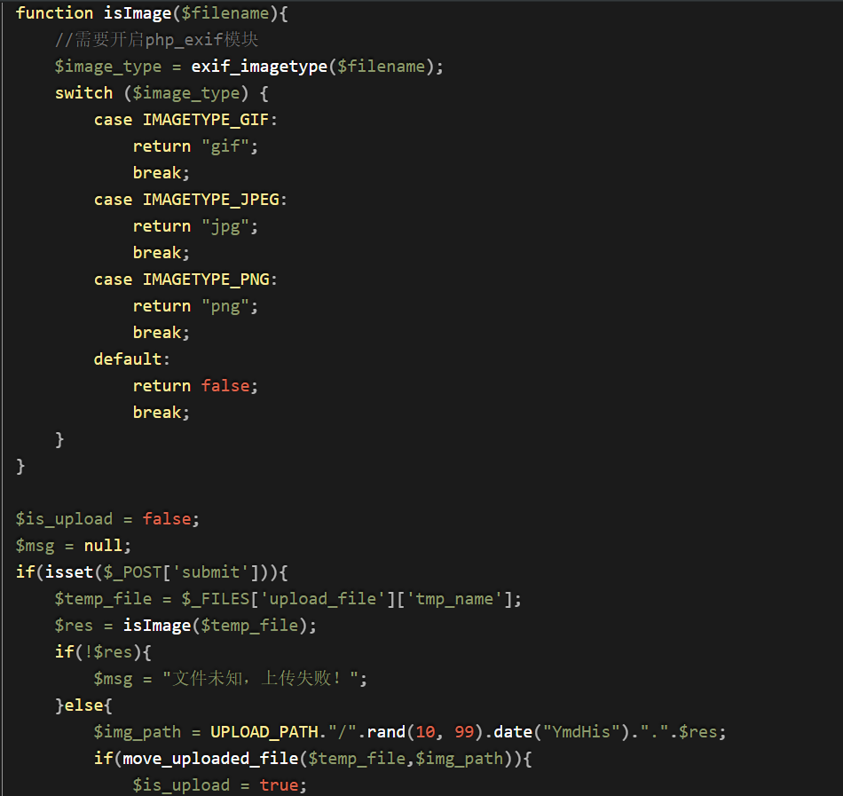
0x08 二次渲染
pass16
imagecreatefromgif() 判断图片类型，对图片进行二次渲染.
这里move_upload_file()图片移动之后，是经够了imagecreatefromgif渲染修改后再重新覆盖修改。
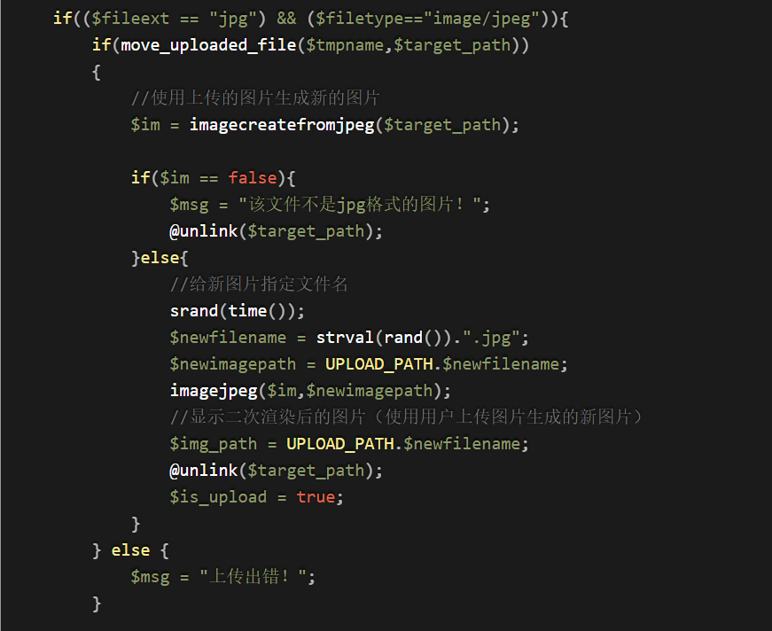
上传图片木马之后，一句话木马被渲染丢失
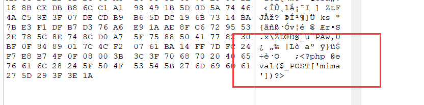
通过WINHEX数据比较可得
0~798 数据相同未被修改，在未被修改的区域填入一句话木马，成功上传，并且未被因渲染而丢失
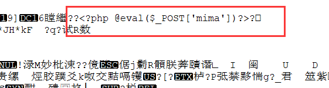
0x09 条件竞争
PASS17
源码可知存在条件竞争，上传速度大于匹配unlink条件就能显示webshell界面
想着写个脚本捕获数据，发现线程太大，电脑带不动。pass18也是如此
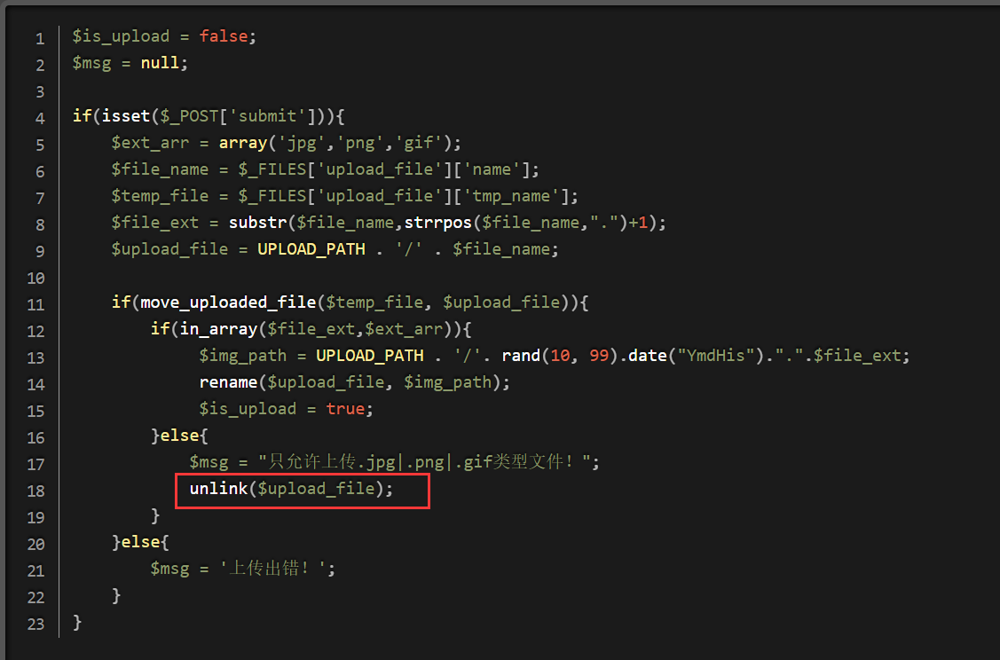
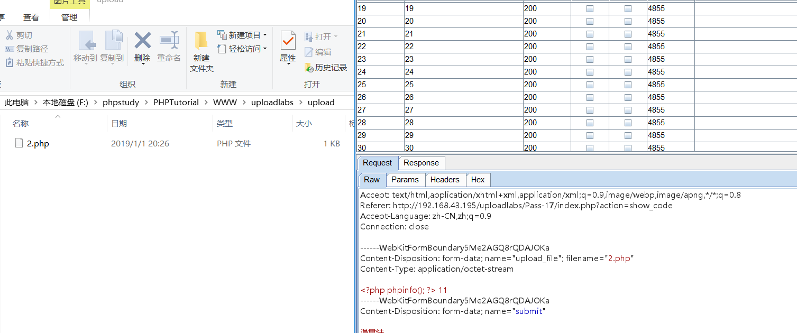
修复理解
不应该把move_upload_file()函数置于判断条件头，应先执行白名单判断。
pass19
重命名出 采用空格点号绕过可以成功上传
可以看到这里去点是在重命名之前，所以我们可以通过 2.php. . 所以点号是不会被去除
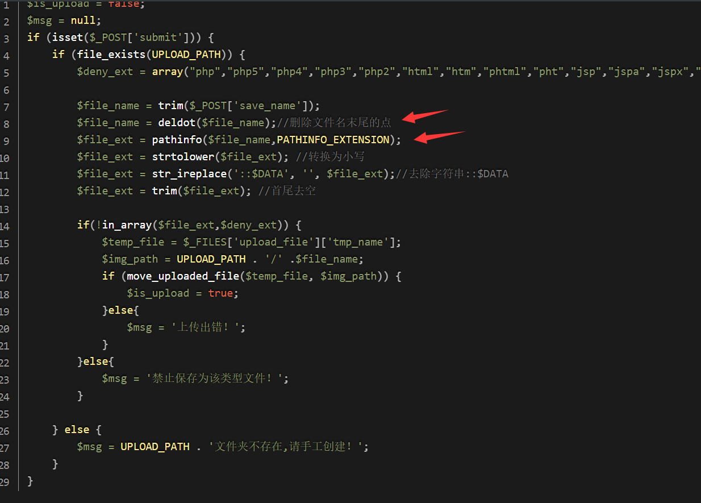
0x09 修复上传漏洞
- 目录过滤不严，攻击者可能建立畸形目录
- 文件未重命名，攻击者可能利用Web容器解析漏洞
当然满足这些还是不够，还存在Web容器解析漏洞。
0x010 总结
附上一张图
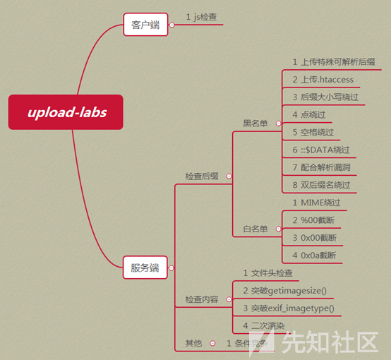
文件上传首先需要判断是客户端做出了限制还是服务端
客户端需要修改JS条件语句
服务端
白名单00截断需要判断路径是否可控且是否重命名，版本需要5.2以下。
黑名单需要考虑图片木马，特殊符号组合过滤，特殊后缀名解析方式若服务端对文件进行函数判断，主要是二次渲染会造成麻烦
条件竞争，可以采用burp重发重读